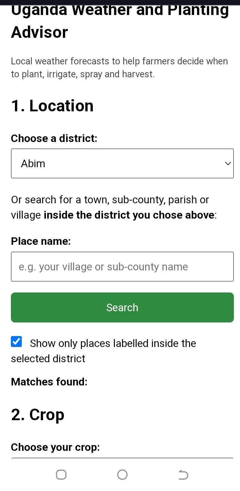

SmartDesk: AI Customer Support Assistant
Streamlit · Gemini API
An AI assistant for small businesses that reads the business’s own FAQ, price list and policies, answers customer questions using only that information, sorts each message by category and urgency, and flags complaints and unusual requests for the owner. If the answer is not in the documents, it says so instead of guessing.
Customer: What time do you open?
Handled automatically
- Category
- question
- Urgency
- low
Hello! We are open from Monday to Saturday, 8:00 AM to 7:00 PM. We are closed on Sundays.
Customer: My phone is still broken after your repair! I want my money back!
Needs the owner’s attention
- Category
- complaint
- Urgency
- high
Thank you for your message. The owner will follow up with you shortly.
Examples of the kind of result the demo shows. Wording varies from run to run.

Status: live demo using a fictional phone repair shop. Replies are drafts for the owner to review. Each visit is limited to 15 replies, and the first load may take a moment.
Complaint Reply Tool
Flask · Gemini API
A web tool for small businesses that turns a customer complaint into a polite, professional reply draft. Paste the complaint, click Generate Reply, and get a response that acknowledges the issue, offers a clear next step, and avoids blame and over-promising. Built for shops, couriers, Airbnbs and restaurants that handle complaints on WhatsApp.

Status: live demo. Replies are drafts for the owner to review before sending. Hosted on a free plan, so the first load may take up to a minute.
Uganda Weather and Planting Advisor
API · Agriculture
A free, mobile-friendly web app for smallholder farmers and extension workers. Users pick a district or search a village, choose a crop and activity, and get a live 7-day forecast, rain alerts and day-by-day planting, irrigation, spraying and harvesting advice, with forecast uncertainty explained.

Status: live prototype. Advice rules are awaiting agronomist review.
Meeting Notes Summarizer
Python · Gemini API
A command-line tool that turns messy meeting notes into decisions made, action items with owners, and unresolved questions. Built for NGOs, schools and small teams.
Status: v1.0 released. Command-line tool.